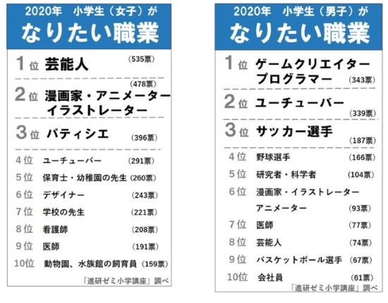
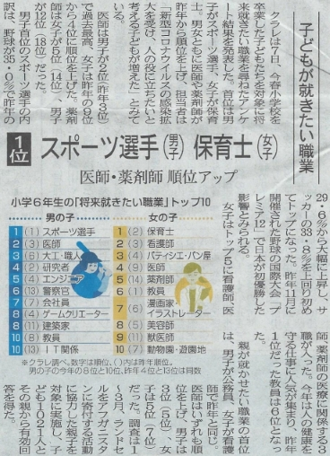
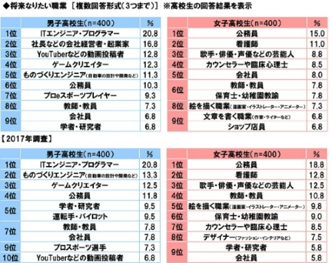
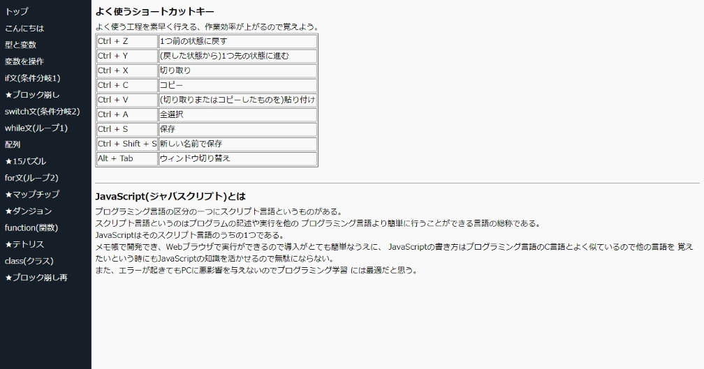
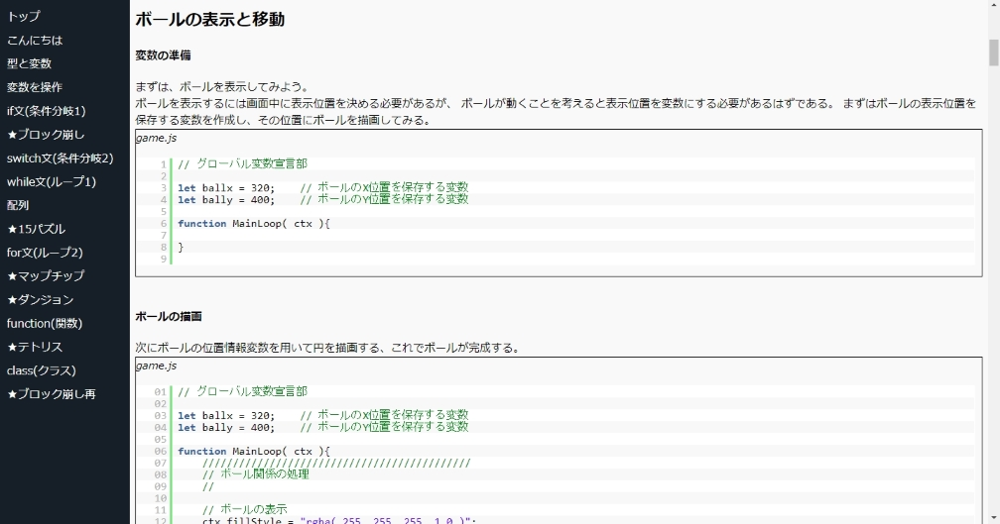
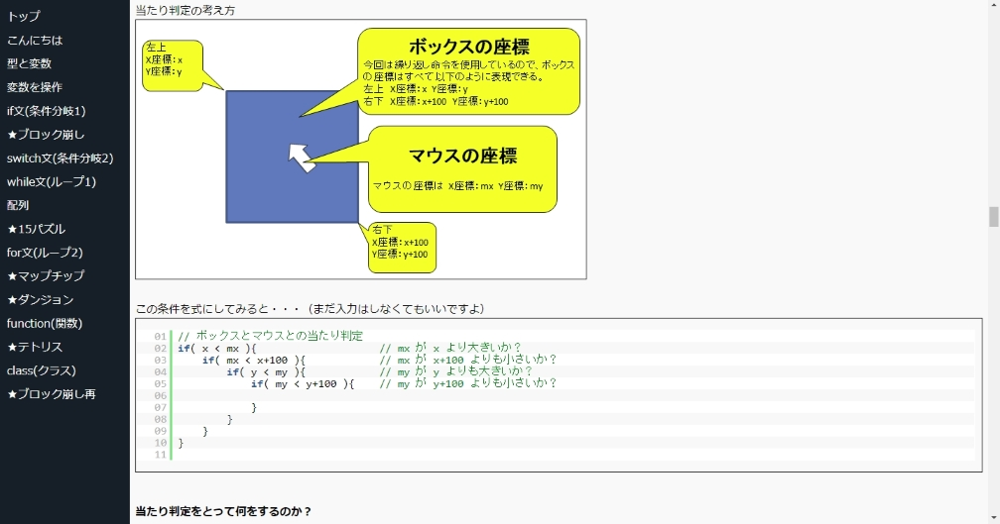

こちらは広告を見てアクセスされた方を対象としたページです。
2020年より小学校教育にプログラミングが必修科目となりました。
現代日本では身の回りにはプログラミングに溢れています。
それだけではく、最近はスマート家電と呼ばれるスマートフォンアプリで
管理ができるものも増えてきています。
これからもプログラミング・プログラマーの需要が増えていくと思われます。
その一方で日本はIT後進国と言われているのが現状です。
国会ではUSBを知らないIT大臣を批判しているのはクラウドを知らない
国会議員というお遊戯が繰り広げられ、国内からも馬鹿にされています。
そしてそれは教育の現場でも同じです。
今の日本のプログラミング教育を例えるならば、
料理のレシピだけを教えて、実習は行わず、この料理を作ることができますね？
と問うような教育です。
プログラミングは勉強で得た知識だけでは、ぼんやりとしたとても曖昧な状態
です。それを実際に触れて動きを見て、初めて具体的な形となって理解できる
ものです。
そんな惨状の日本でも、子供たちのプログラミングに対する興味はとても高い
ものとなっています。
以下の画像はそれぞれ、
小学館進研ゼミ小学講座の「小学生がなりたい職業」（2020）
北日本新聞2020年7月8日の朝刊の記事の切り抜き（2020）
ソニー生命の「中高生が思い描く将来についての意識調査」（2019、2017）
の調査・アンケート結果です。




いずれもゲームやIT等、プログラムに関係する職業が高い順位に位置しています。
このことから、プログラミングの学習には需要があります。
また、作曲家やイラストレーターの方の中で、自身の作品を知ってもらう為に
ゲームを制作するという方々もいらっしゃいます。
今プログラミングに興味が無くとも一度検討してみるといいかもしれません。
当「ForestEXOR Games(フォレストエクスオア ゲームス)」では、
ゲームを作ってみたい・プログラミングをしてみたいと思っている子供たちに、
ゲーム制作を通してプログラミングの学習を提供したいと考えています。
当事業が提供するプログラミング学習では、必要なものはウェブブラウザと
メモ帳(テキストエディタ)アプリだけでできる、とても導入が簡単なものと
なっており、パソコンがあればすぐに始められます。
(PCの性能や、MacOSは応相談)
対象
小学4年 ～ 高校生くらい(またはローマ字が読める知識)
学習形態
1. 家庭教師2. リモート授業（※）
| ※ |
Webカメラの購入、リモートアプリ、チャットアプリの導入が必要です。 指導・コミュニケーションが困難なため慣れるまでは推奨されません。 コロナ禍の為、最初からリモートも可ですが効率は非常に悪いです。 |
| ※ |
現在検討中。 塾開設の際にはノートPCの持ち込みが必要となります。 |
費用
| 個別指導 | |
|---|---|
| 基礎編 | 1,000円/1時間 |
| 中級編 | 1,500円/1時間 |
| 集団指導 | |
| 基礎編 | 700円/1時間 |
| 中級編 | 1,000円/1時間 |
現在、基礎編・中級編のテキスト(無料)まで用意があります。
参考資料
・テキスト(一部抜粋)  
テキストは電子媒体となります。
また、「 Unity デザイナーズ・バイブル 」等、各種Unity本の著者でもあり、
現役ゲームエンジニアでもある コポコポ 氏に監修して頂いております。
・サンプル
テキストの各章・各段階ごとにサンプルを用意してあります。
最初に作るゲームの最終サンプルです → サンプル：ブロック崩し
中級編では基礎からより発展したプログラミング知識と、ピタゴラスの定理を
使ったシューティングゲームの制作を予定しています。 → 参考：STG
（こちらはサンプルにアレンジを加えた参考です）
中級編からはプログラミングの知識だけではゲームを作れないので、
三角関数(ピタゴラスの定理もこれに関連)などの「数学」
と
重力加速度のような「物理」
それらをプログラミングとして実装する方法の学習を予定しています。
事業証明

ドキュメント
利用規約 , 利用申し込み契約書プロフィール
元 アイディアファクトリー株式会社(ゲーム会社)プログラマー
経済産業省
基本情報技術者試験 合格
サーティファイ情報処理能力認定委員会主催
C言語プログラミング能力認定試験 2級 合格
サーティファイ情報処理能力認定委員会主催
Javaプログラミング能力認定試験 3級 合格
サーティファイ情報処理能力認定委員会主催
情報処理技術者能力認定試験 2級 合格
CG－ARTS協会主催
CGエンジニア検定 ベーシック 合格
CG－ARTS協会主催
マルチメディア検定 ベーシック 合格
Microsoft Office Specialist(MOS)
Excel 2010 合格
Microsoft Certified Associate(MCA)
Platform 合格
Microsoft Certified Associate(MCA)
Application 合格
サーティファイ著作権検定委員会主催
ビジネス著作権検定 初級 合格
公益財団法人実務技能検定協会主催
ビジネス電話実務検定 知識B級 合格
サーティファイコミュニケーション能力認定委員会主催
コミュニケーション検定 初級 合格
厚生労働省認定 ニチイ学館主催
子育て支援研修 放課後児童コース 修了
Game Conference for Students 2012
日本マイクロソフト賞 受賞 「空鳥」
Imagine Cup 2012 日本大会
ゲームデザイン部門 優秀賞 受賞 「空鳥」
実績
現在実績はありません。Q&A
現在お問い合わせはありません。お問い合わせ
または
事業所：富山県 滑川市 開403
TEL：076-474-1424
Mail：forestexor@gmail.com
代表 森田 大雄 まで
お気軽にご相談ください。